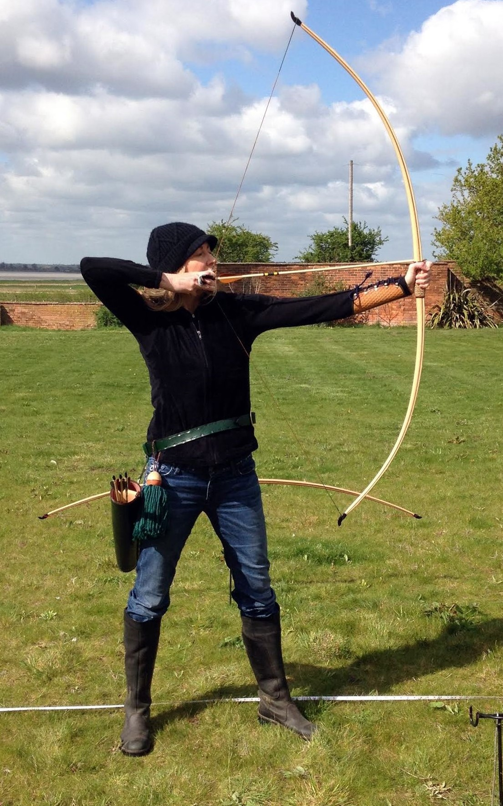
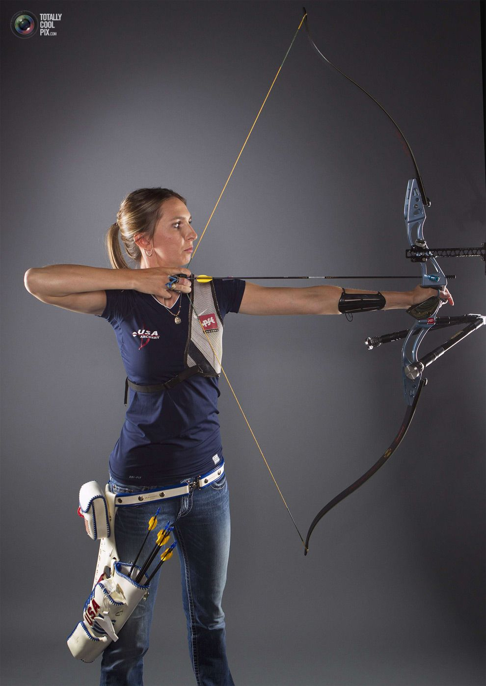
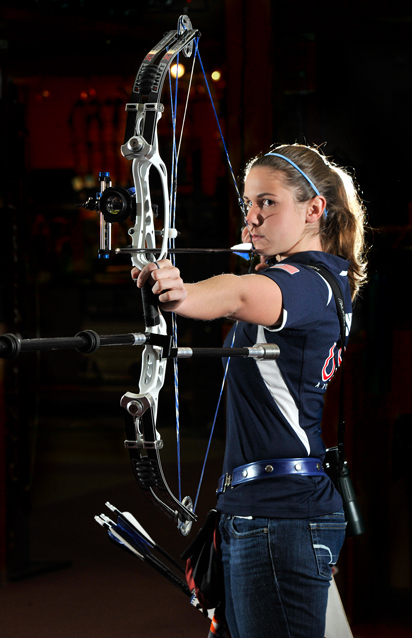

Traditional Bow/Longbow
Traditional bows are characterised by their simplicity:
they consist of a long, slightly curved piece of wood the same height as the archer and do not have arrow rests or sights.
As such they are much more difficult to aim than more modern bows and do not have nearly the same velocity as compound or recurve bows.
Bows and Brands
Archery bows have evolved a lot from the traditional yew bows on display in history museums.
These days many are constructed from high-tech materials such as fibreglass and carbon fibre, and some have advanced shooting mechanisms.
The four main types of bows available include recurve bows, compound bows, and longbows.
Bow Type


Recurve Bow
Most people will start their archery journey with a recurve bow.
However, that doesn’t mean that they’re not suitable for skilled archers; modern versions of the recurve bow are used in Olympic events.
These bows are named for their distinct shape:
the central parts of the limbs curve toward the archer, and the tips of the limbs curve away.
This configuration is designed to reinforce the archer, providing more power with less strength needed to use the bow.
Because of this, recurve bows are frequently used to teach archery.
Beginners will usually start out with a barebow recurve, consisting of two bow limbs; a riser, to help balance the bow; a string and an arrow rest.

Compound Bow
Compound bows were invented in the 1960s and are the most modern archery bow type.
They utilise an innovative system of cables, pulleys and eccentric cams to assist the archer in holding a heavy draw weight.
While drawing the bow still requires a good deal of strength, the pulley system kicks in at full draw and helps the archer hold the draw weight for a longer period of time,
without excessive muscle fatigue, so that they can focus on aiming.
Choose A Bow
After you set up you mindon archery, it might be the time to get a box. Knowing which bow to buy is where it gets really overwhelming. There are so many options, with prices ranging from “on a college budget” to “my spouse may leave me” levels.- If you want a bow for target practice only or hunting?
- What is the budget for the bow (remember to factor in accessories)?
- Did you have your measures ready on draw weight, length, etc?
- How Heavy Should The Bow Be?
- Visit a Online Store to discover more!
| Bow Brands | Bow Type | Price |
|---|---|---|
| Hoyt Archery | Compound & Recurve | Extremly Expensive |
| Bowtech Archery | Compound | Expensive |
| Bear Archery | Compound & Traditional & Recurve | Medium |
| PSE | Compound & Recurve | Expensive |
| Epic Archery | Compound & Recurve | Inexpensive |
| Diamond Archery | Compound & Traditional & Recurve | Inexpensive |